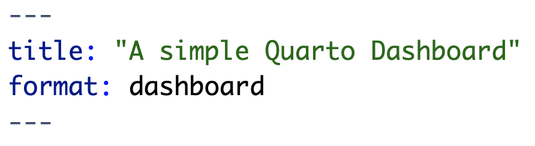
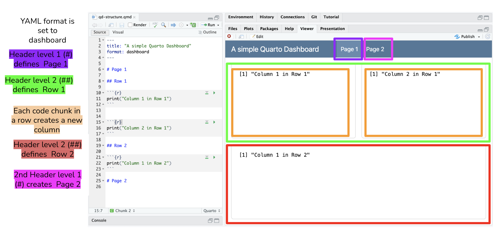

<!-- #| fig-width: '100%' -->
<!-- #| fig-height: '100%' -->
flowchart TD
A[Goal: Create a web-based application for data interaction]
A --> B{Shiny App}
A --> C{Quarto Dashboard}
C --> D(Build a Dashboard if:)
B --> E(Build a Shiny App if:)
D --> F[Interested in quickly creating a dashboard prototype]
F --> G[Have a preference for Quarto]
G --> H[There are non-programmers who need to create or maintain dashboards]
H --> I[Want to blend narrative text with interactivity]
I --> J[Prefer a simpler, code-light approach]
J --> K[Dashboard requirements are relatively static]
E --> L[Dashboard requires a highly customized user interface]
L --> M[Dashboard needs to perform complex data analysis with user inputs]
M --> N[Dashboard requires real-time data updates]
N --> O[There are programmers familiar with reactive programming in R to create or maintain dashboards]
O --> P[Dashboard requires a multi-page app with navigation]
Learning Objectives
- Create and design customized dashboards using Quarto Dashboards
- Become familiar with different components of a dashboard and it’s syntax
10.1 What is a Quarto Dashboard?
It a tool that aims to make it simple to create compelling interactive dashboards in R (and/or Python, Julia and Observable) (quarto.org. These dashboards are designed to be easy to create, and support a wide variety of visualizations and interactive components. We can incorporate Shiny widgets and functionality into a dashboards, making it a powerful tool for creating interactive visualizations and outcomes that can be shared with others.
Quarto Dashboards are inherit form flexdashboards, an R package to create interactive dashboard using RMarkdown.
- They are composed in charts, these charts are the atomic unit of a dashboard.
- You can custom the layout incorporating pages, tabsets and sidebars and more.
10.2 Dashboard Components Overview
| Component | Example |
|---|---|
| Navigation Bar | Top page bar with icon, title, author and links to sub-pages (if added). |
| Pages, Rows, Columns, and Tabsets | Pages, rows and columns are defined using markdown headings (with optional attributes to control height, width, etc.). Tabsets can be used to further divide content within a row or column. |
| Cards, Sidebars, and Toolbars | Cards are containers for plots, data display, and free form content. The content of cards typically maps to cells in your notebook or source document. Sidebars and toolbars are used to present inputs within interactive dashboards. |
Source: Quarto.org/docs/dashboards
10.2.1 Examples
Diamonds Data (with Shiny elements)
10.3 Basic Structure
Now let’s familiarize ourselves with how an .qmd is structured to create a Quarto Dashboard and how to create a dashboard in it’s simplest form.
The first step is to indicate in our .qmd file YAML that we want to create a dashboard as the output of this file. Our YAML will look like this:

Now, remember that we said that we need to know/understand Markdown to provide structure to our dashboard. In it simplest form, the basic structure of a dashboard can be summarized in three lines:
Each Level 1 header (#) corresponds to a new page.
Every Level 2 header (##) introduces a new row.
Every code chunk introduces a new column.
Note: The default layout setting is by rows. You can set the orientiation to be by column in the YAML. If that is the case, then the level 2 header would be a column and each code chunk a row in the column.
Note 2: Quarto will automatically divide the area into equally divided charts.
Let’s see how this looks in practice.
 ::: callout-tip ## Text in heading is not required Dashboards use markdown headings to define the layout of rows and columns. However, the heading text itself is discarded. In this example we use headings Row and Column to introduce the basic components of the layout. You can use more descriptive headings if they help you navigate your source code.
:::
10.4 Further Layout customization with attributes
Some attributes to add to columns, rows, or boxes include:
{width=} and {height=} |
both of these attributes set the relative size of columns, rows, and boxes. |
{orientation=} |
sets the dashboard layout to either rows or columns. This is a global option set in the YAML. However, if your dashboard has multiple pages and you want to specify the orientation for each page, remove orientation: from the YAML and use this attribute instead |
{.tabset} |
divide columns, rows, or charts into tabs |
{.sidebar} |
creates a sidebar typically used to place Shiny inputs and is an optional step to add Shiny elements to your dashboard. See documentation here |
{.hidden} |
excludes a specific page from the navigation bar |
10.5 Adding Components
The different components that can be added to a dashboard are:
HTML Widgets |
incorporates JavaScript data visualization tools and libraries into a dashboard. This includes features like interactive plots, maps and more. At this time there are 130 htmlwidgets available to use in R, check out the gallery of widgets |
| R Graphics | any chart, plot or graph that is created using any R package |
| Tables | add tables using knitr::kable() for simple tables or use the DT package for interactive tables. More information in the official documentation |
| Value Boxes | Create boxes to display single values along with a title and optional icon. More information about available icons and colors here |
| Text Content | you can also include arbitrary markdown content anywhere within a dashboard. You can add at the top of the qmd file or in a determine space in your layout by using content cards {.card}. |
| Navigation Bar | the navigation bar automatically includes the title, author, and date (if specified in the YAML). New pages are added to the navigation bar starting on the left side. There is also an option to add links to social media and the source code (specify this in the YAML) |
| Pages | You can introduce multiple pages to a single dashboard using level 1 header in Markdown (#), above the level 2 header used to define rows and columns within a page. The text of the level 1 headings will be used to link to the pages in the navigation bar. |
10.6 Deploying your Dashboard

If your Dashboard does not have any Shiny components you can publish your flexdashboard using:
- RStudio IDE using the Publish Button and select a destination to publish to. See Posit’s documentation.
- GitHub Pages. See Chapter 7 Publishing your analysis to the web with GitHub Pages.
If your Dashboard does have Shiny components you will need to publish to shinyapps.io. This can be done using:
- RStudio IDE using the Publish Button.
- The
rsconnectpackage usingrsconnect::deployApp().
10.7 Demo: Creating a Quarto Dashboard
The demonstration will include examples that showcase different dashboard features:
- Basic dashboard
- Multipage layout with interactive elements